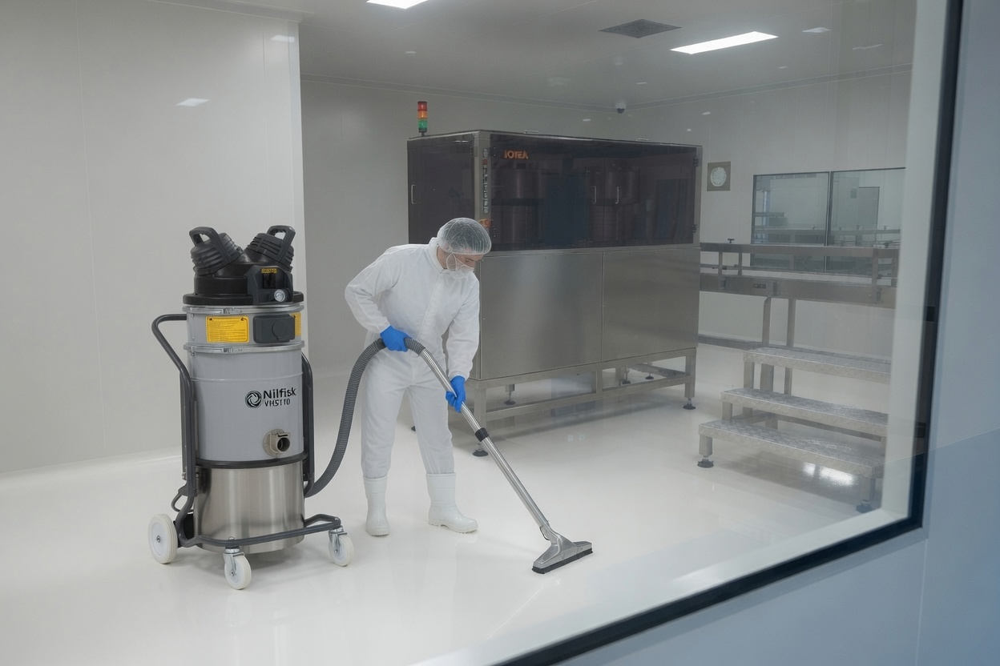

Food safety & verification of clean
Cleaning to a hygiene standard is one thing. Proving it with microbiological evidence is what keeps your RMP intact and your auditors satisfied. Here's exactly how we work.
The red line is a hard boundary — we treat it like one
The red line separates lower-risk areas (goods-in, ambient storage, packing) from high-care and high-risk production zones. Cross that line carelessly and you carry contamination with you.
- Tools designated per task & zone. Separate tools for floors, non-contact equipment and product-contact surfaces — used strictly to your facility's procedures.
- Controlled zone change. Tools, containers and equipment enter the high-care end zone only once cleaned, sanitised, verified and double-bagged — nothing crosses the red line unchecked.
- Cleaning-validation expertise. We know best-practice zone-change and verification methods, and can help write, test and validate cleaning-tool validations alongside your site quality team.
High-care & high-risk areas
The zones where ready-to-eat product is exposed demand the strictest hygiene. We clean them to match.
Dedicated equipment
Tools, cloths and consumables that live in the high-care zone and never leave it — eliminating a major cross-contamination route.
Controlled access & gowning
Crews follow your access, gowning and hygiene protocols for high-care entry, working within your site's rules.
Enhanced sanitation
Disinfection contact times are respected and verified, with extra attention to product-contact surfaces and high-touch points.
APC & micro swabbing — the clean, evidenced
After cleaning we verify the result and record it. That documentation is what turns "we cleaned it" into "here's the proof it was clean."
Our staff are environmentally- and micro-trained by reputable NZ providers — AsureQuality (AQ) and Eurofins — and take swabs, log results, and trend them over time so emerging issues are caught before they become an audit finding or a product-quality problem.
APC swabs
Aerobic Plate Count confirms the microbial load on a surface is within your spec after cleaning.
ATP checks
Rapid bioluminescence readings give an instant pre-operational clearance signal at the line.
Allergen & protein residue
Targeted residue checks support changeover and allergen-control verification where required.
Documented & trended
Results recorded against location and date, trended for review — ready for MPI and customer audits.
The 7-step best-practice wet clean
A disciplined, repeatable sequence for food-contact surfaces. Each step has a purpose — skip one and the clean fails.
- 01
Gross clean
Remove visible debris and product waste from surfaces and floors.
- 02
Pre-rinse
Rinse with controlled-pressure water to clear loosened soil.
- 03
Foam & detergent
Apply MPI-approved detergent at correct dose and contact time.
- 04
Intermediate rinse
Rinse away detergent and suspended soil completely.
- 05
Disinfect
Apply sanitiser and honour the full contact time for kill.
- 06
Final rinse
Potable-water rinse where required by the chemical and surface.
- 07
Dry, inspect & verify
Dry down, visual inspection, then APC/ATP verification and sign-off.
- Dry areas?
In dry/powder zones we switch to a controlled dry-cleaning protocol — no water introduced.
Factory-adapted tools & aids
The right tool, fitted to the job and the zone. We bring the equipment that suits your plant — not a one-size-fits-all kit.
Foam & dosing systems
Controlled-application foam and accurate chemical dosing for even coverage and correct concentration.
Colour-coded segregated tools
Brushes, squeegees and scrapers coded by zone to enforce the red line in practice, not just on paper.
CIP / COP support
Clean-in-place and clean-out-of-place support for closed systems, tanks and small parts.
Controlled-pressure washing
Pressure matched to the surface and zone — enough to clean, never enough to aerosolise contamination.
Work-at-height access
Scissor lifts and trained operators for high-level structures, services and ceilings.
Tank & silo equipment
Specialist gear for safe internal cleaning of tanks, silos and confined spaces.
Site-dedicated equipment
Our cleaning equipment is dedicated to your site and never shared between client plants — closing off any cross-site contamination route.
Cleanrooms & controlled environments
Beyond food plants, we clean sensitive industrial and laboratory environments where the room itself — and the equipment in it — carries strict contamination requirements.
ISO 14644 cleanroom cleaning
Cleaning to controlled-environment standards for ISO Class 7, 8 and 9 rooms, working within your gowning, access and particle-control requirements.
Sensitive equipment & room requirements
Methods and chemistry chosen to protect sensitive instruments and surfaces while meeting the room's environmental specification.
DNA-sensitive cleaning
Cleaning of environments where DNA contamination control is critical — trusted by reputable manufacturers including Thermo Fisher Scientific and TechnoPlas NZ.

Built around your compliance
We work inside your food-safety system, not alongside it — so our cleaning supports your RMP and HACCP plan directly.
We're experienced in reading and interpreting your Risk Management Programme (RMP), Food Safety Plan (FSP) and standard procedures — so we can advise on best-practice cleaning methods, tools and procedures that reduce the risk of foreign-material (FM) and microbiological contamination.
Every job begins with a documented risk assessment before cleaning commences, and our crews operate to WorkSafe-compliant practices throughout.
principles applied
oriented
compliant
chemicals only
Want your clean verified and documented?
Book a site visit and we'll map your zones, risks and verification plan.